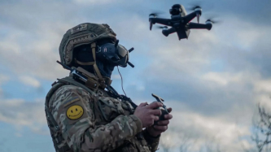

Знайомство з дронами FPV
За останні роки світ дронів став свідком дивовижної еволюції, яка захопила як ентузіастів, так і професіоналів. Серед різноманітних доступних типів безпілотників дрони FPV (вид від першої особи) здобули значну популярність завдяки захоплюючому та захоплюючому польоту. У цій публікації в блозі ми дослідимо, що таке дрони FPV, чим вони відрізняються від традиційних дронів, а також заглибимося в зростаюче захоплення дронів FPV серед ентузіастів. Крім того, ми висвітлимо унікальні особливості та переваги, які роблять дрони FPV захоплюючим вибором для любителів польотів.
FPV дрони — це особлива порода дронів, які забезпечують перегляд від першої особи з точки зору самого дрона. Це означає, що пілот носить окуляри FPV або використовує монітор FPV для перегляду живого відео, яке передається камерою, встановленою на дроні. Це відео в режимі реального часу дозволяє пілотам відчути політ так, ніби вони сиділи всередині дрона, забезпечуючи захоплюючий і захоплюючий досвід.
Однією з ключових відмінностей FPV-дронів від традиційних є управління польотом.
У той час як традиційні безпілотні літальні апарати зазвичай управляються через зону прямої видимості або покладаються на автономні режими польоту, безпілотні літальні апарати FPV потребують прямого введення пілота для маневрування та навігації. Це практичне керування створює унікальне відчуття свободи та хвилювання, дозволяючи пілотам виконувати вражаючі повітряні маневри, літати на високих швидкостях і досліджувати складні умови з точністю.
Зростання популярності безпілотників FPV серед ентузіастів можна пояснити кількома факторами.
По-перше, захоплюючий і адреналіновий досвід польоту, який пропонують дрони FPV, не має собі рівних. Пілоти справді можуть відчути, ніби вони ширяють у небі, виконуючи сміливі трюки та знімаючи захоплюючі кадри з повітря. Можливість бачити світ з висоти пташиного польоту в режимі реального часу додає захоплюючий вимір у хобі та приваблює пристрасну спільноту ентузіастів FPV.
Крім того, за останні роки доступність і доступність технології FPV значно покращилися. Наявність готових до польоту комплектів безпілотних літальних апаратів FPV, а також прогрес у технології камери та передачі спростили початківцям увійти у світ FPV. Крім того, з’явилися онлайн-спільноти та форуми, присвячені безпілотникам FPV, які надають цінні ресурси, навчальні посібники та платформу для пілотів, щоб поділитися своїм досвідом і знаннями.

Для вашого спокою доступна гарантія на місці до 3 років.

Відкрийте для себе всі наші продукти та аксесуари, у тому числі ексклюзивні товари

Знижки до 70% на нові продукти, ви можете бути впевнені в найкращій ціні.